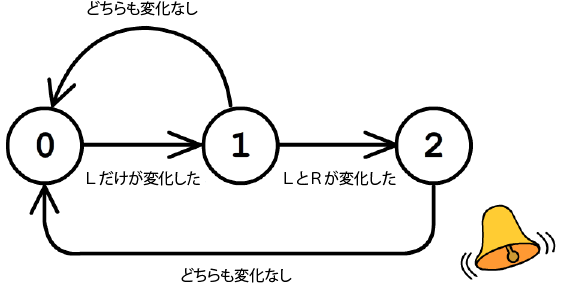
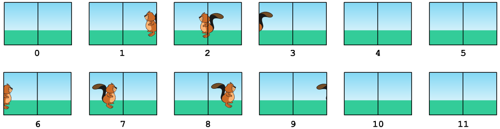

ビ太郎のお店では，コンピュータに接続されたカメラが特定の動きを検出するとベルが鳴るようになっています。
コンピュータはカメラの画像を1秒ごとに調べ，1秒前の画像と現在の画像の違いから動きを検出します。
コンピュータには A, B, C 3つの状態があり，下の図のように移り変わります。最初の状態は A です。
矢印とそこに書かれた条件によって，コンピュータはある状態から別の状態に移ります。
状態が C から A に移ると，コンピュータはベルを鳴らします。

上の図の中で，Lは「画像の左半分」を，Rは「画像の右半分」を表しています。

最初はコンピュータの状態は A でした。ベルが鳴るのはいつでしょうか？
| 画像0 | 状態A |
| 画像1 | 状態A |
| 画像2 | 状態A |
| 画像3 | 状態A |
| 画像4 | 状態B |
| 画像5 | 状態A |
| 画像6 | 状態B |
| 画像7 | 状態B |
| 画像8 | 状態C |
| 画像9 | 状態C |
| 画像10 | 状態C |
| 画像11 | 状態A（ベル） |